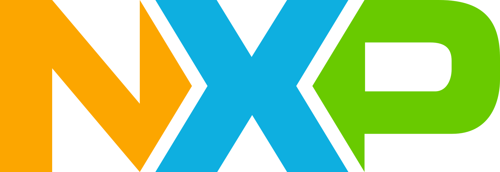

Overview
AI Engineer with expertise in deep learning, edge AI, and deploying scalable software systems. Experienced in transforming frontier research into high-performance, real-world solutions.
Skills
Education

Master of Science in Applied Computing (AI)
University of Toronto, Canada · Sept 2025 - Dec 2026
GPA: 4.0/4.0
Courses: Computational Imaging, Neural Networks and Deep
Learning, Visual and Mobile Computing Systems.
Teaching Assistant: Introduction to Computer
Programming and Data Structures.
Bachelor of Engineering in Computer Science
Thapar Institute of Engineering, India · July 2019 - June 2023
CGPA: 9.34/10
Minor: Edge AI and Robotics (by NVIDIA)
Recommendations & Testimonials
Experience
Trusted By Teams At

UofT
CS
AI Intern
AMD, Toronto, Canada · [Start Date] - Present
Exploring generative AI for GPU kernel optimization and portability.
Teaching Assistant
Department of Computer Science, University of Toronto · Sep 2025 - May 2026
Jan 2026 - May 2026: CSC263H1: Data Structures and Analysis
Sep 2025 - May 2026: CSC108: Introduction to Computer Programming
Microprocessor Header Engineer
NXP Semiconductors, Noida, India · July 2023 - March 2024
Developed and optimized critical low-level C/C++ based software components, including memory-mapped register header files and interrupt handling, across 6+ SoC projects.
Automated the revision history generation process, cutting manual effort from 2 days to a few clicks.
Developed Python scripts to optimize interrupt workflows, which reduced coding errors by 30%, enabling faster deployment.
Technical Intern - Microprocessor Eng.
NXP Semiconductors, Noida, India · Jan 2023 - July 2023
Contributed to header workflows for 4 SoC projects, ensuring reliability and delivery to Validation, RTD, and Design teams.
Resolved 20+ tickets on customer-ready header files, improving early-stage support for chip development cycles.
Projects
Developed Multimodal DuoAttention (MMDA), a head-specialized KV-cache management method for long-video multimodal LLMs, and evaluated it on offline and streaming VideoQA benchmarks.
Achieved up to 9.8× KV-cache memory reduction on LLaVA-OV-0.5B and 2.2× on 7B at 32K context, while improving prefill latency by 8–14% and preserving most benchmark accuracy.
On real streaming benchmarks (RVS-Ego, RVS-Movie), MMDA improved over full attention while cutting GPU memory from 15.0→4.8 GB and 9.2→3.5 GB, and reducing answer latency from 1.77→0.33 s and 1.34→0.33 s.
Benchmarked against ReKV and StreamingTom, showing MMDA offers the strongest overall quality-efficiency tradeoff and remains runnable in settings where 7B full attention runs out of memory.
Designed a PyTorch-based distillation framework for UDC image restoration, transferring spectral reasoning from a MambaIR teacher to a lightweight UNet using FFT based losses.
Achieved teacher-level perceptual quality while reducing inference latency by 40 times (2.5s to <100ms) for real-time mobile deployment.
Developed an agentic AI multilingual voice assistant automating hospital workflows using LLMs (Llama 3 for intent classification, RAG) and advanced audio models (Higgs for STT/TTS with emotion & multi-speaker for surgery transcript generation).
Built a cross-platform mobile app (Flutter + Django) integrated with an IoT sensor based hardware device to detect motorcycle crashes.
Developed an automated alert system that notifies authorities and emergency contacts, reducing response time to under 30 seconds.
Certifications
Advanced Machine Learning Specialization. (Placeholder)
Certified Edge AI Developer. (Placeholder)